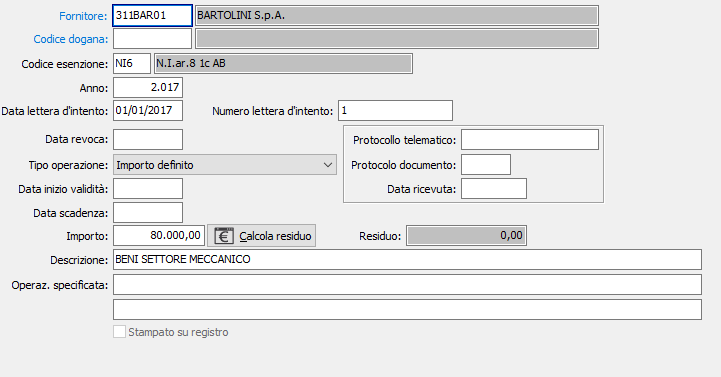
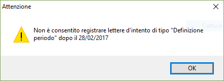
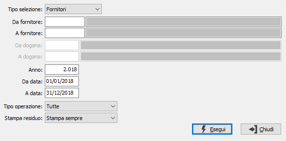

Manutenzione dichiarazioni fornitori
La procedura consente l'archiviazione delle dichiarazioni d'intento inviate ai fornitori oppure le dichiarazioni di intento emesse alle dogane. Il programma consente di protocollare automaticamente tali lettere, e provvede ad aggiornare l’anagrafica del fornitore trattato con il codice esenzione ed il flag di addebito bolli esenzioni. Le dichiarazioni d’intento relative alle dogane possono essere inserite lasciando vuoto il codice del fornitore ed inserendo il codice dogana, che deve essere presente nella tabella Dogane.

I dati richiesti per la registrazione sono i seguenti:
Codice esenzione: aliquota Iva con “Tipo utilizzo plafond” diverso da “Nessun utilizzo”, viene proposto il codice impostato in configurazione.
Data e numero della lettera d’intento.
Data revoca lettera d’intento: da compilare in fase di registrazione della revoca della dichiarazione.
Protocollo telematico / Protocollo documento / Data ricevuta: indicare gli estremi della ricevuta telematica comunicata dall’Agenzia delle Entrate (protocollo telematico, protocollo documento e data ricevuta).

Operazione specifica: la dichiarazione si riferisce ad una sola operazione per un importo pari ad un importo indicato in dichiarazione. In fase di registrazione delle fatture, sia dai documenti che dalla prima viene effettuata una segnalazione non bloccante se è già presente una fattura registrata nei documenti o in prima nota contabile.
Importo definito: la dichiarazione si riferisce ad operazioni fino a concorrenza di un importo indicato in dichiarazione.
Definizione periodo: operazioni comprese nel periodo nelle date indicate in dichiarazione, tali operazioni non sono più valide in base dalla normativa che regola tale gestione dal 01/03/2017 e non è più consentito registrare lettere di intento da tale data, in fase di salvataggio della lettera viene segnalato il messaggio riportato a lato.
Data inizio validità: attivo per tipo operazione “Definizione periodo”
Data scadenza: attivo per tipo operazione “Definizione periodo”
Importo: indica l’importo stampato sulla dichiarazione di intento ed è attivo per tipo operazione “Importo definito” e “Operazione specifica”.
Descrizione: indica il tipo di beni e servizi per cui viene richiesta l'esenzione.
Operazione specifica: contiene la descrizione dell'operazione specificata da riportare sulla stampa della dichiarazione ed è attivo per tipo operazione “Operazione specifica”.
Tramite il bottone presente accanto all’importo e attivo solo dopo aver salvato la dichiarazione, è possibile calcolare il residuo dell’importo in base ai documenti assegnati alla lettera di intento; è possibile visualizzare tali documenti tramite il programma “Controllo dichiarazioni/documenti”.
Tramite i pulsanti Anteprima e Stampa della toolbar o gli appositi tasti funzione, è possibile stampare un elenco delle dichiarazioni ricevute.

Le data richiesta a video per la selezione delle lettere di intento si riferiscono alla data della lettera d’intento, se il campo “Stampa residuo” ha un valore diverso da "Non stampare", in fase di stampa viene riportata la colonna relativa a tale importo.